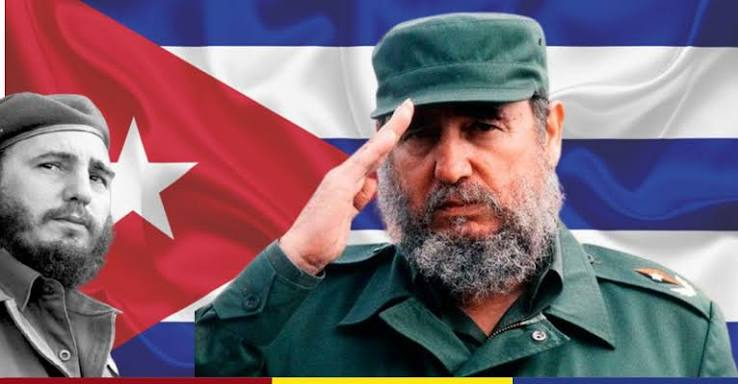

EL LEGADO DE FIDEL. Pasado, presente y futuro
El legado de futuro de Fidel Castro no reside en fórmulas mágicas ni en recetas dogmáticas, sino en una praxis revolucionaria intransigente y en una ética de la liberación.

Introducción
El tema que queremos revisar hoy con ustedes es el legado de futuro de Fidel Castro. Para eso no nos basaremos sólo en lecturas propias, sino también en lo que se ha discutido desde numerosas perspectivas, ya que su figura nunca pasó ni pasará inadvertida para la mayorías, menos aún para activistas e intelectuales. A menudo, cuando se aborda su figura, se corre el riesgo de caer en dos extremos: la apología vacía o la repetición mecánica de consignas. Sin embargo, como bien advierte el sociólogo cubano Aurelio Alonso en un artículo publicado por LA TIZZA, cualquier ejercicio de lectura sobre el pensamiento de Fidel debe ser un llamado a no conformarnos con aprender y repetir citas, sino a comprender la profundidad de un pensamiento que sigue interpelándonos.
Para comprender por qué Fidel es una figura del siglo XXI y no solo un ícono del siglo XX, en primer lugar, analizaremos los fundamentos de su legado político: la Revolución como praxis, y la centralidad del anticapitalismo y el antimperialismo. En segundo lugar, abordaremos su proyección internacionalista, que demostró con hechos que la solidaridad no es una utopía; y, en tercer lugar, nos detendremos en su visión del futuro, que abarca desde la construcción del socialismo y la batalla cultural, hasta su profético humanismo ambientalista. Todo ello, basado estrictamente en las reflexiones de autores como Fernando Martínez Heredia, el sociólogo Aurelio Alonso, el colectivo de autores que ha estudiado su pensamiento ambientalista, y los análisis publicados en medios cubanos sobre su legado.
El fundamento del legado. Revolución como praxis y antimperialismo
Para entender hacia dónde miraba Fidel, primero hay que entender desde dónde partía. Aurelio Alonso nos recuerda que el concepto de Revolución, aunque originado en la geometría, aplicado a la historia se vincula al momento de cambio radical. En el imaginario cubano, la Revolución aflora como una constante histórica: es expresión de dignidad, de orgullo, de audacia, de desafío, de sacrificio y de esperanza. En la Cuba de la segunda mitad del siglo XX, ser revolucionario se identificó con la entrega total, la incondicionalidad y el reto de hacer posible metas que parecían irrealizables.
Alonso señala que la dura experiencia de forjar una república auténticamente soberana, sobre principios de justicia social y equidad, demostró que tal propósito solo podía ser socialista. Ese acercamiento natural fue calificado por Cintio Vitier como un milagro histórico, el mayor suceso espiritual y la mayor originalidad de la Revolución cubana. Ese es el primer gran legado para Cuba y para el mundo: la demostración práctica de que la liberación nacional indisolublemente unida a la revolución socialista era posible.
Ahora bien, Fernando Martínez Heredia, en sus palabras en los Paradigmas Emancipatorios, nos ofrece las claves para entender este legado como una herramienta para el presente y el futuro. Nos advierte que el primer homenaje que recibió Fidel al morir fue una consigna de hoy, una invención de los jóvenes que hizo suya todo el pueblo: “Yo soy Fidel”. Esto demuestra que su pensamiento pertenece al futuro, no al pasado. Para sacarle provecho a Fidel, tenemos que evitar repetir lugares comunes y conocer más las creaciones y las razones que lo condujeron a sus victorias, las dificultades y los reveses que enfrentó.
Entonces nos sistematiza las enseñanzas de Fidel en trece puntos clave que resultan decisivos para los objetivos emancipatorios actuales. Entre ellos, destaca la capacidad de partir de lo imposible y de lo impensable para convertirlos en posibilidades mediante la práctica consciente, organizada y el pensamiento crítico. Esta es la esencia de la praxis revolucionaria. Asimismo, subraya la determinación de no aceptar jamás la derrota como un estado permanente. Martínez Heredia recuerda cinco momentos cruciales en la vida de Fidel - el Moncada en 1953, el Granma en 1956, la zafra de 1970, el proceso de rectificación ante el colapso de la URSS en 1985, y la batalla de ideas en el año 2000 - donde los reveses fueron convertidos en puntos de partida para nuevas ofensivas.
Otros puntos fundamentales de este legado son la organización constante, que fue una verdadera fiebre para Fidel; la comunicación permanente con cada ser humano y con las masas; la utilización de tácticas creativas y estrategias impensables pero factibles; y la comprensión de que se lucha por el poder para conquistarlo, mantenerlo, defenderlo y expandirlo. Fidel entendió que solo las prácticas revolucionarias logran convertir al poder en un problema que pueda resolverse, y que hay que crear los instrumentos y los protagonistas, tomando las instituciones para ponerlas al servicio del pueblo, y no al revés.
En el plano teórico, Martínez Heredia destaca una de las mayores contribuciones de Fidel frente a los reduccionismos del pensamiento revolucionario. Se trata de la crítica a la deformación que atribuye una supuesta causa puramente económica a todos los procesos sociales. El triunfo del capitalismo cosificó la vida espiritual, llevando a muchos a creer que los seres humanos no son los protagonistas de la historia. Fidel, por el contrario, demostró que la actividad consciente y organizada del pueblo es la única fuerza capaz de cambiar la realidad. Las clases dominantes nunca cederán el poder por una simple evolución económica. Como dijo Fidel en 1969: son los poderes y los procesos socialistas la condición necesaria para plantearse el desarrollo, y no el desarrollo la condición para plantearse el socialismo.
Por otro lado, es vital entender su visión del antimperialismo. También Martínez Heredia analiza tres procesos de las últimas cuatro décadas: el fin del llamado socialismo real, la imposibilidad de que los países logren un desarrollo autónomo fuera del capitalismo, y la consumación del dominio de Estados Unidos sobre América Latina. Las lecciones son claras: los avances sociales son reversibles, el capitalismo es un sistema mundial hipercentralizado, financiarizado, parasitario y depredador que no va a cambiar por sí solo, y Estados Unidos actúa siempre para impedir la autonomía de nuestros pueblos. Por tanto, el antimperialismo debe ser una parte inalienable de todas las políticas del campo popular.
La dimensión internacionalista. Solidaridad concreta y no sólo retórica
El legado de Fidel no se circunscribe a las fronteras cubanas. Muchos artículos y análisis publicados por periodistas e intelectuales cubanos dan cuenta de cómo la política exterior de la Revolución, inspirada en su pensamiento, se convirtió en una práctica real y tangible. Frente a quienes acusaban a Cuba de exportar su revolución, Fidel defendió siempre la idea de que las revoluciones no se exportan, sino que las hacen los pueblos. Sin embargo, la solidaridad cubana se materializó en hechos concretos.
Entre 1960 y 1990, más de 300 mil combatientes y 50 mil civiles cubanos participaron en misiones solidarias en África, específicamente en las luchas de liberación nacional en Angola, Namibia, Zaire, Guinea, Cabo Verde y el Congo. Miles de ellos perdieron la vida en esas tierras. Este esfuerzo titánico fue reconocido por líderes como Nelson Mandela, quien afirmó que el pueblo cubano ocupa un lugar especial en el corazón de África. Incluso el Che Guevara, en su carta de despedida, reconoció la talla de Fidel como estadista en momentos críticos como la crisis de los misiles, afirmando que pocas veces brilló más alto un estadista que en esos días.
Este internacionalismo no es un accesorio del proyecto revolucionario, sino una de sus columnas vertebrales. En la actualidad, ese legado se mantiene vigente con decenas de miles de cooperantes cubanos, principalmente médicos, alfabetizadores y técnicos deportistas desplegados en América Latina, el Caribe y África. Esta solidaridad demuestra que la liberación de Cuba es inseparable de la liberación de los pueblos oprimidos del mundo. Es una forma de entender la política que trasciende el egoísmo nacional y que constituye una lección de futuro en un mundo donde la cooperación y el multilateralismo son cada vez más necesarios frente a las crisis globales.
La visión de futuro. Socialismo, conciencia y medio ambiente
Llegamos así al núcleo de nuestra exposición: ¿Cómo veía Fidel el futuro y cuál es su aporte a esa mirada?
Primero, el socialismo como condición del desarrollo y la batalla de ideas. Como ya mencionamos, Fidel invirtió las concepciones deterministas al plantear que el socialismo es la condición para el desarrollo y no al revés. Pero Fidel no concebía el futuro como un proceso automático. Su visión incluía la necesidad de librar una batalla permanente por la conciencia.
Martínez Heredia explica que Fidel lanzó la batalla de ideas en el año 2000 ante la ofensiva mundial capitalista y los retrocesos internos. Esta batalla respondía a una comprensión profunda de la guerra cultural que libra el capitalismo. El esfuerzo principal del capitalismo actual está puesto en dominar la vida cotidiana, lograr que todos acepten que la única cultura posible es la suya. Para ganar esta guerra, el capitalismo no intenta imponer un pensamiento único, sino inducir que no haya ningún pensamiento. Está en marcha un colosal proceso de desarmar los instrumentos de pensar, de erradicar la capacidad humana de hacer inferencias mediatas, hasta alcanzar una especie de idiotización de masas. El capitalismo busca eliminar la rebeldía, homogeneizar los sentimientos e igualar los sueños.
Frente a esto, Fidel entendió que la concientización debía estar en el centro del trabajo político. Como señala Martínez Heredia, Fidel fue siempre un educador, buscando que el pueblo se levante espiritualmente y moralmente para convertirse en un participante consciente y capaz de todo. La política, para Fidel, no puede conformarse con administrar; debe ser una propiedad de todos. Alcanzar victorias electorales, o administrar mejor que las pandillas de gobernantes, en ciertas circunstancias concretas puede ser algún tipo de avance, pero es completamente insuficiente. Se necesita una nueva política, la centralidad de la praxis y la radicalización de los procesos para garantizar la supervivencia del campo popular.
Segundo, el humanismo ambientalista: la previsión científica. No podemos hablar de la visión de futuro de Fidel sin abordar su pensamiento ambientalista, un aspecto que podemos captar fácilmente a través de sus discursos, los cuales son analizados por un numeroso colectivo de autores, y que hoy resulta extraordinariamente vigente.
El pensamiento ambientalista de Fidel se caracteriza por comprender la relación entre la naturaleza, la humanidad y la sociedad como un intercambio activo, es decir, un metabolismo social como diría Marx. Para Fidel, deben primar tanto la racionalidad en el empleo del medio y sus recursos, como la previsión científica, vista esta como un instrumento para la acción humana con sentido ambientalista. Sus ideas expresan un verdadero humanismo ambientalista.
No se trata de un ecologismo pasivo o romántico, sino de una visión profundamente política y pedagógica. El futuro, para Fidel, requería la formación de modos de actuación ambientalistas en las nuevas generaciones. La educación ambiental se convierte así en una herramienta para la transformación, en la que los seres humanos aprenden a relacionarse con su entorno de manera sostenible y consciente. Esta previsión científica es un aporte crucial para el siglo XXI, en un contexto de crisis climática y depredación capitalista de los recursos naturales, o una “fractura metabólica” como lo denomino John Bellamy Foster. Fidel entendió que el futuro de la humanidad dependía de la capacidad de establecer una relación racional y sostenible con la naturaleza, y que esa tarea no podía dejarse al azar, sino que requería planificación, ciencia y conciencia.
Conclusiones
A modo de conclusión, podemos afirmar que el legado de futuro de Fidel Castro no reside en fórmulas mágicas ni en recetas dogmáticas, sino en una praxis revolucionaria intransigente y en una ética de la liberación.
Sus enseñanzas nos dejan varias certezas. Primero, que el anticapitalismo y el antimperialismo no son opciones, sino necesidades inalienables para cualquier proyecto de emancipación. Segundo, que la organización, la comunicación y la concientización del pueblo son las armas más poderosas frente a la guerra cultural y la alienación. Tercero, que el socialismo debe ser asumido desde las complejidades reales, sin hacer concesiones, como un proceso de creación cultural y liberación humana. Y cuarto, que la relación con la naturaleza debe basarse en un humanismo ambientalista, con previsión científica y responsabilidad hacia las generaciones futuras.
Fernando Martínez Heredia termina su reflexión diciendo que la liberación de los seres humanos y las sociedades es lo que abrirá las puertas a un mundo nuevo. Parece una ambición enorme, pero como él mismo afirma, es lo único factible. La consigna de los jóvenes cubanos, “Yo soy Fidel”, no es un lamento por el pasado, sino la constatación de que su pensamiento y su ejemplo siguen siendo un mapa indispensable para navegar el futuro.
Como señaló Aurelio Alonso, la Revolución es un proceso complejo que exige distinguir entre el clímax revolucionario y el tiempo de revolución. El legado de Fidel nos invita a asumir ese tiempo de revolución como una construcción permanente, donde la dignidad, la justicia social y la soberanía siguen siendo las brújulas que guían nuestras luchas.
Muchas gracias.
Cristhian Riquelme · Antropólogo, miembro de TejeR-ConstruIR · IG: @tejer_org · Revista Horizonte: www.revistahorizonte.cl